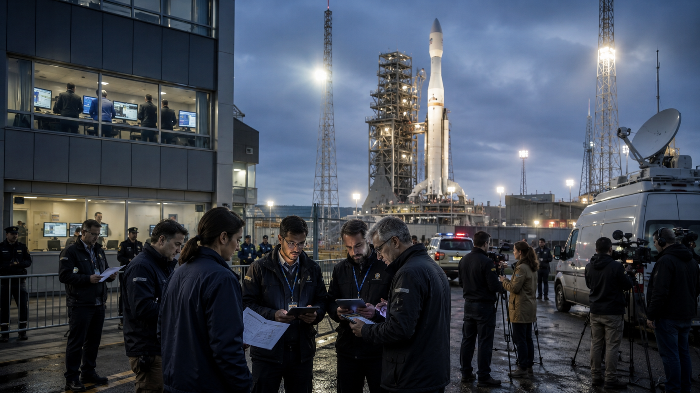
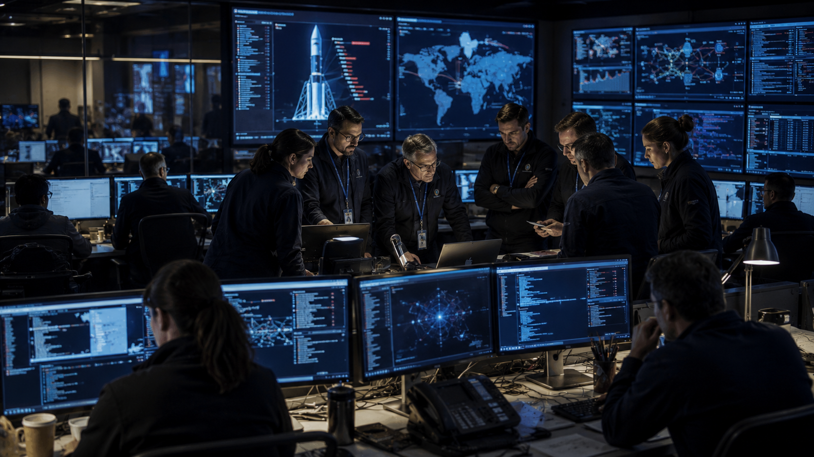
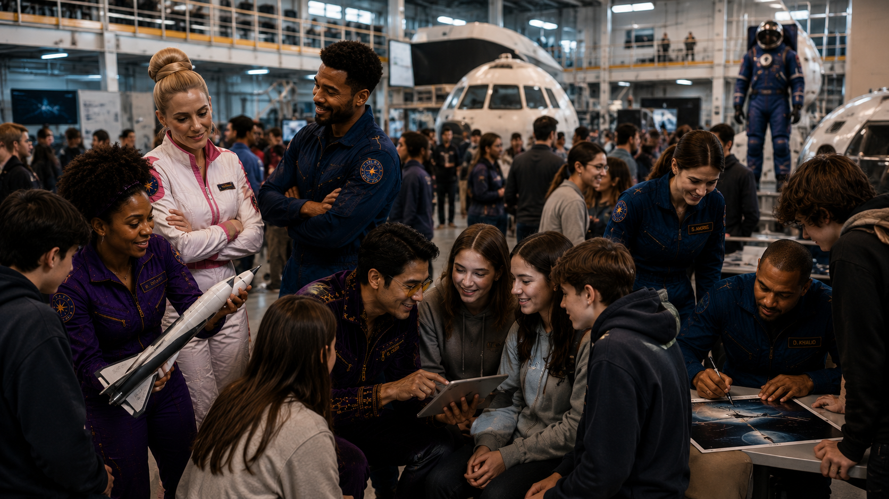

The Kacentina Space Administration announced late yesterday that the KMM Valdoria lunar mission has been placed on hold after technicians detected what officials described as "computer irregularities" across several systems at the launch facility. No launch date has been rescheduled. The mission clock, which had been counting down to a six-day window, was stopped at 14 hours and 22 minutes.
KSA Director Pavena Tholt confirmed in a brief statement that the full crew has been moved to a secondary location and that all personnel are safe. She did not describe the nature of the malfunctions or say how many systems had been affected. "We take the integrity of our systems very seriously," Tholt said. "We will not proceed until we have complete confidence in our technology."
The agency declined to answer follow-up questions about whether the malfunctions could be the result of outside interference. A second statement, released early this morning, confirmed that Kacentina's national security and technical teams have begun a joint investigation. No timeline for the review has been given.
The KMM Valdoria mission had been years in the planning and was seen as one of the most significant achievements in Kacentina's space program history. Officials have not said whether the mission will be delayed by days, weeks, or longer.
Continue Reading →Quillantis Declines to Comment on KSA Incident, Citing Desire to Protect Ties with Hazelia
▼Officials in Quillantis have declined to make any public statement about the events at the KSA launch facility, according to a brief response issued by the Quillantis Ministry of Foreign Affairs Tuesday morning. The ministry said only that Quillantis was "monitoring the situation" and would not be offering further comment at this time.
Two sources familiar with the relationship between the countries told the Herald that the decision to stay quiet was made specifically to avoid damaging Quillantis's relationship with Hazelia. Quillantis and Hazelia have maintained a close partnership on trade and regional cooperation for over two decades, and officials there are said to be unwilling to take a public position that could be read as an attack on Hazelia.
The silence has drawn attention from many people. "When something like this happens, you expect your neighbors to say something," said one analyst, speaking on condition of anonymity. "Quillantis choosing to say nothing is itself a kind of statement." Kacentina's foreign office said it had taken note of all international responses and non-responses to the incident.
Quillantis and Kacentina do not have a formal alliance, though the two countries have generally maintained polite relations. It is not yet known whether Kacentina has reached out to Quillantis directly for a private response.
Continue Reading →Ollijam's James Oliver Calls Incident a "Problem for All Nations" — Offers Technical Teams; Kacentina Has Not Responded
▼Ollijam's leader, James Oliver, made a public statement Tuesday calling the disruption at the KSA facility a matter that concerns every nation. "Any attack against the systems of one country is a problem for all countries," Oliver said at a press conference in the Ollijam capital. "We stand with Kacentina. No nation should have to face this alone."
Oliver said Ollijam was prepared to send a team of information technology specialists to help look into the computer issues at the KSA facility. The offer was made publicly and framed as an act of goodwill between nations. Ollijam has one of the largest cybersecurity programs in the region and has assisted other countries in the past.
As of this reporting, Kacentina has not publicly accepted or declined the offer. Sources described the government as being cautious about allowing outside access to the KSA facility, even from friendly nations. "The investigation is in its early stages," one official said. "We want to understand what happened first."
Several analysts noted that Kacentina's careful handling of the offer does not reflect any problem with Ollijam, but rather a general policy of protecting the security of its space program. Oliver said Ollijam would "continue to be available" if Kacentina chose to accept the offer at a later time.
Continue Reading →
KSA Security Teams Moving "Around the Clock" Toward a Solution, Officials Say
▼The Kacentina Space Administration's internal security team, working alongside the national technical response unit, has been operating continuously since the mission hold was announced. Officials said Tuesday morning that teams are working "around the clock" and are committed to identifying the source and scope of the computer irregularities before any mission activity resumes.
The agency has not released details about which systems were affected, how the problem was first noticed, or whether it involved any access from outside the facility's network. A spokesperson said that sharing those details during an active investigation would not be appropriate. "We are making progress," the spokesperson said. "We will inform the public when we have something to share."
KSA has a dedicated computer security team that was expanded significantly three years ago. It operates separately from Kacentina's national cybersecurity division, though the two have reportedly been in close contact since yesterday. Multiple analysts said the fact that a joint team has been assembled suggests the situation is being treated as serious.
"You don't pull in that many people for a routine software glitch," said one technology expert the Herald spoke with. "This looks like a broad review, not a targeted fix." Officials did not confirm or deny this claim.
Continue Reading →"We've Trained for Everything." KMM Valdoria Crew Remains Focused Despite Mission Hold
▼The four-person crew of the KMM Valdoria mission has been relocated to a secondary facility and is being kept on standby while the investigation at the main launch complex continues. KSA said all crew members are in good health and have been briefed on the situation. Mission Commander Chedda McSwagga addressed the press briefly Tuesday morning.
"We have trained for a long time for this mission," McSwagga said. "We are ready to go when the agency says we are ready to go. That hasn't changed." The rest of the crew was not present at the brief statement but were described as "focused and in good spirits."
The crew includes specialists in geology, life sciences, systems engineering, and navigation. They have spent the past year in full mission simulation. Several crew members are on record saying the delay, while disappointing, is the right call. "You don't launch if you're not sure about your systems," said one crew member in a statement passed through the agency. "That's not what we trained for."
Continue Reading →
KSA Academy Reports Jump in Applications Since Mission Announcement — Incident Has Not Changed Numbers
▼The Kacentina Space Administration Academy announced Tuesday that it has received more applications for its next training cycle than any previous year on record. Officials said the high interest began building several months ago, when the KMM Valdoria mission entered its final phase of preparations and drew significant national attention.
The academy's admissions office said that despite this week's news, application numbers have not dropped. If anything, one official noted, the inbox has been busier than usual. "Kacentinans are paying attention to space right now," said admissions director Angela Roberts. "A pause does not change the mission. The mission is still there."
The academy runs a two-year program that covers flight operations, systems engineering, mission science, and health sciences. Acceptance rates have historically been under 8 percent. The incoming class for the next cycle will be announced following the close of the application window in the coming months.
Continue Reading →City of Prenvala Reports Pigeon Population "Substantially Above Average" for Third Year
▼The city of Prenvala released its annual urban wildlife count on Tuesday, and the pigeon figures are, once again, high. The city counted an estimated 84,000 pigeons within city limits, which wildlife officers described as "substantially above average." It is the third year in a row the number has exceeded the city's target range.
City officials said they are "aware of the trend" and are "looking into options." A public comment period will open next month. Residents are asked not to feed the pigeons in designated no-feeding zones, though city data suggests this request has so far been largely ignored. "They're just really friendly," said one resident near the central square. "What are you supposed to do."
Wildlife officers stressed that pigeons are not considered a threat to public safety and that the city remains committed to a "humane and measured" approach to population management. A plan is expected by the end of the quarter.
Continue Reading →